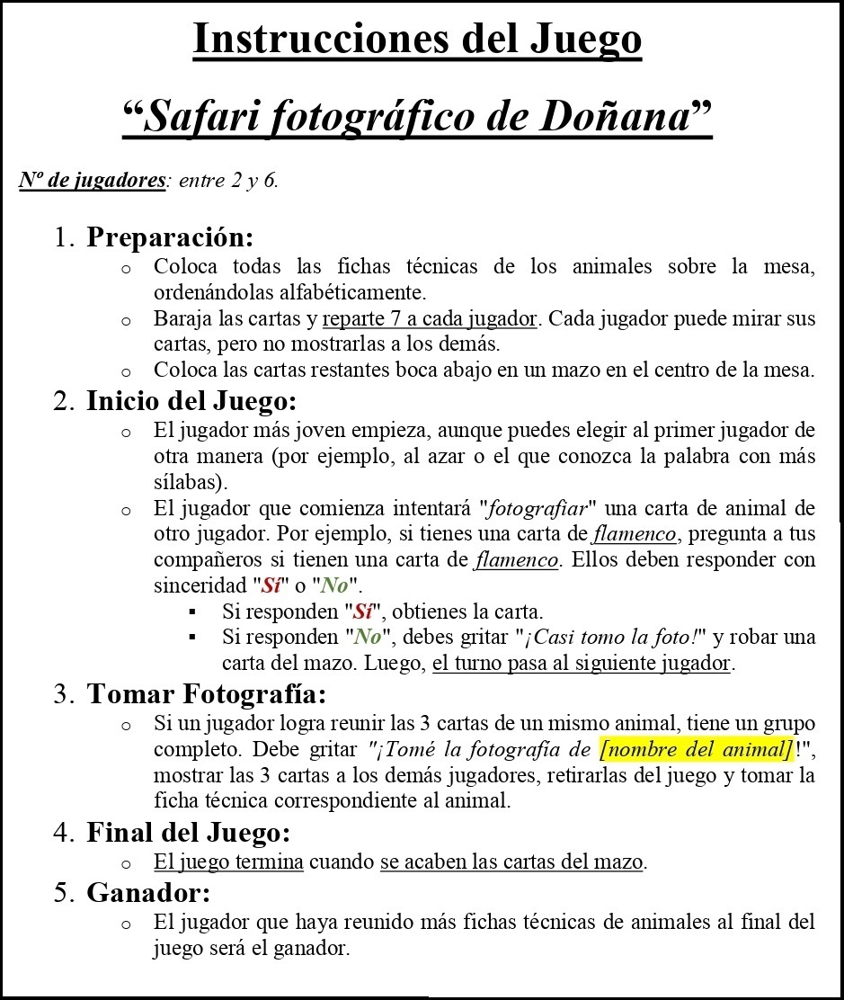

Nuestra empresa simulada ha decidido sacar provecho del Parque de Doñana de manera sostenible, es decir, sin dañarlo y ayudando a que más personas lo conozcan, incluyendo las especies que viven allí. Para lograrlo, te propongo realizar la siguiente actividad, que se compone de 6 partes y entregables.
Parte 1 (y entregable): Empezamos a trabajar con el procesador de textos
Lee detenidamente las instrucciones del juego de mesa "Safari fotográfico por Doñana":

Tamaños de letra:
Título: 24.
Puntos numerados: 16.
Subpuntos no numerados: 12.
Ahorareplica el documento exactamente usando el procesador de textos, presta atención a:
Tamaños de letra.
Justificaciones de párrafo.
Listas.
Negritas, cursivas, subrayados.
Cambios de color de letras.
Resaltado el fondo en otro color de alguna palabra.
El entregable de este apartado deberá ser un fichero de texto en formato editable (odt, doc, docx, rtf,...) con el mismo contenido y formato que el de la imagen del manual de instrucciones.
Parte (y entregable) 2: Trabajamos el procesador de textos
Busca por Internet sitios web, confiables en los que acceder a información sobre la flora y la fauna de Doñana... puedes tomar de ejemplo de fuentes fiables los siguientes enlaces:
Usando la información localizada en Internet más los enlaces adicionales que el profesorado provee en esta tarea, deberás completar el juego de cartas con los animales de la pirámide trófica de Doñana. Ten en cuenta que, cada imagen deberá ser incluida en el juego de cartas por triplicado (en una carta con fondo rojizo/marrón, en otra verdoso y en otra con fondo azulado); además cada carta deberá incluir el nombre común y científico del animal. Otro elemento importante es que a todas las imágenes incluidas de los animales en las cartas deberá habérseles eliminado el fondo.
Una vez finalizadas las cartas deberás, buscando la información en Internet, cumplimentar una ficha técnica de cada uno de los animales incluidos en ellas, apóyate para ello en la plantilla diseñada por el profesorado copiando (y pegando) tantas veces como estimes oportuno la tabla de la ficha técnica individual de animal.
Al menos deben contemplarse 20 animales diferentes.
Microsoft, Libre Office, OpenOffice, Google. Logos de los procesadores de texto(Todos los derechos reservados)
Recuerda que para la realización del trabajo tus principales herramientas deberán ser en el procesador de textos y las plantillas provista por el profesorado, cumpliendo las condiciones y dimensiones en ella incluidas.
El resultado a entregar en esta parte debe ser un par de ficheros de texto en formato editable (odt, doc, docx, rtf,...) uno con las cartas y otro con las fichas técnicas (con al menos 20 animales diferentes).
Parte (y entregable) 3: Trabajamos el software de presentaciones
Prepara una presentación comercial que tenga dos partes:
Primera parte: Utiliza la información sobre el animal para captar la atención y ganar la confianza de quienes te escuchan.
Segunda parte: Presenta tu juego, destacando sus características y valorándolo (no olvides incluir el importe, el IVA y el precio de venta al público).
Para crear esta presentación, usa una herramienta de edición de diapositivas como Google Presentaciones, Impress o PowerPoint.
Tu presentación debe incluir, al menos, lo siguiente:
Portada.
Índice.
Contenido teórico sobre el animal o planta que has seleccionado.
Contenido de venta relacionado con el juego que has creado.
Diapositiva de agradecimiento.
Microsoft, Libre Office, OpenOffice, Google. Logos de software de presentaciones(Todos los derechos reservados)
El resultado a entregar en esta parte debe ser un fichero con la presentación realizada en formato editable (odp, ppt, pptx,...).
Parte (y entregable) 4: Trabajamos la cartelería
Usa CANVA, Genially o cualquier otro software que prefieras para crear un cartel promocional de tu juego, diseñado específicamente para redes sociales. Aprovecha las plantillas disponibles en la herramienta que elijas.
Ten en cuenta que este cartel lo presentarás en una feria o convención de empresas turísticas de Doñana, que se llevará a cabo durante la semana del 12 al 15 de abril de 20XX (donde 20XX es el año actual). Publicitarás el cartel en el perfil de tu empresa, ya que estás muy comprometido en que este producto sea un éxito en el evento. Recuerda que, si vas a hacer un post en Instagram, el cartel debe ser cuadrado.
Canva y Genially. Logos(Todos los derechos reservados)
El resultado a entregar debe ser un único fichero de tipo imagen JPG o PNG, correctamente dimensionado para la red social seleccionada (indicando el nombre de la red social en el nombre del fichero) y adecuado al manual de identidad corporativa del centro educativo.
Parte (y entregable) 5: Trabajamos la hoja de cálculo
Imagina que tu presentación comercial ha sido todo un éxito en la convención o feria de empresas turísticas de Doñana, y ahora vas a vender 30 plantillas del juego a una empresa de turismo local. Para ello, crea una factura comercial utilizando "Hojas de Cálculo de Google", Calc o Excel, simulando esta venta.
Asegúrate de identificar correctamente al vendedor y al comprador, incluyendo el NIF, nombre o razón social y la dirección de facturación. Detalla el producto vendido (tu juego), los precios, importes y cantidades, así como los impuestos aplicados (el IVA). Utiliza las fórmulas que aprendiste en clase (SUMA, PRODUCTO, porcentaje, etc.) para hacer los cálculos correctamente.
Microsoft, Libre Office, OpenOffice, Google. Logos de las hojas de cálculo(Todos los derechos reservados)
El resultado a entregar en esta parte debe ser un único fichero con la factura realizada en formato hoja de cálculo editable (ods, xls, xlsx,...).
Parte (y entregable) 6: lo llevamos a Internet
Como parte del trabajo crea una carpeta compartida en tu espacio en la nube (Google Drive, One Drive, Dropbox,...), y sube todos los entregables anteriores. Edita las opciones para compartir la carpeta y hazla pública generando un enlace público de acceso al directorio directamente. Luego, busca por Internet una página que genere códigos QR a partir de URLs y genera el código URL de tu carpeta compartida. Finalmente, remítele al profesorado un "email formal" (incluyendo asunto, saludo, texto introductorio, despedida, nombre del alumno/a), con el QR adjunto y el enlace de acceso a la carpeta compartida.
El resultado a entregar debe ser un único email con un único fichero anexo de tipo imagen JPG o PNG, con el QR de la carpeta compartida. (Además dicho email deberá incluir la URL de acceso a dicha carpeta).